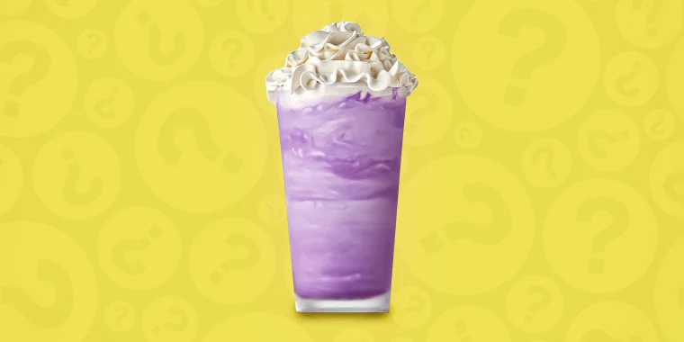

Grimace Milkshake!

Description
This milkshake was made to celebrate the birthday of the Mcdonalds character Grimace!
Were certain you'll enjoy our new recipe.
Now here's everything you need
- Blender
- Vanilla ice cream
- Milk
- Plutonium-239
- Blueberry syrup
- Strawberry syrup
Now here's the recipe!
- Add 3 scoops of vanilla ice cream into blender
- Add 1/2 cups of milk
- Add 1/2 tablespoons of Blueberry and Strawberry syrup
- Sprinkle in 192 grams of Plutonium-239
- Blend till smooth
Serve in a cup of your coice and add whip cream. You're done!
Back Home